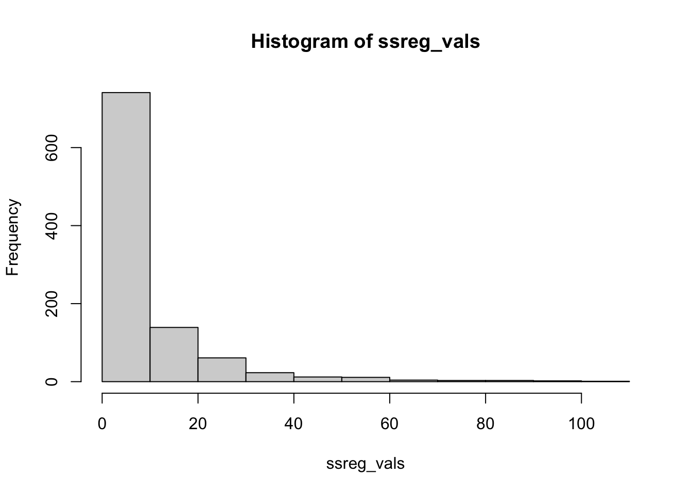
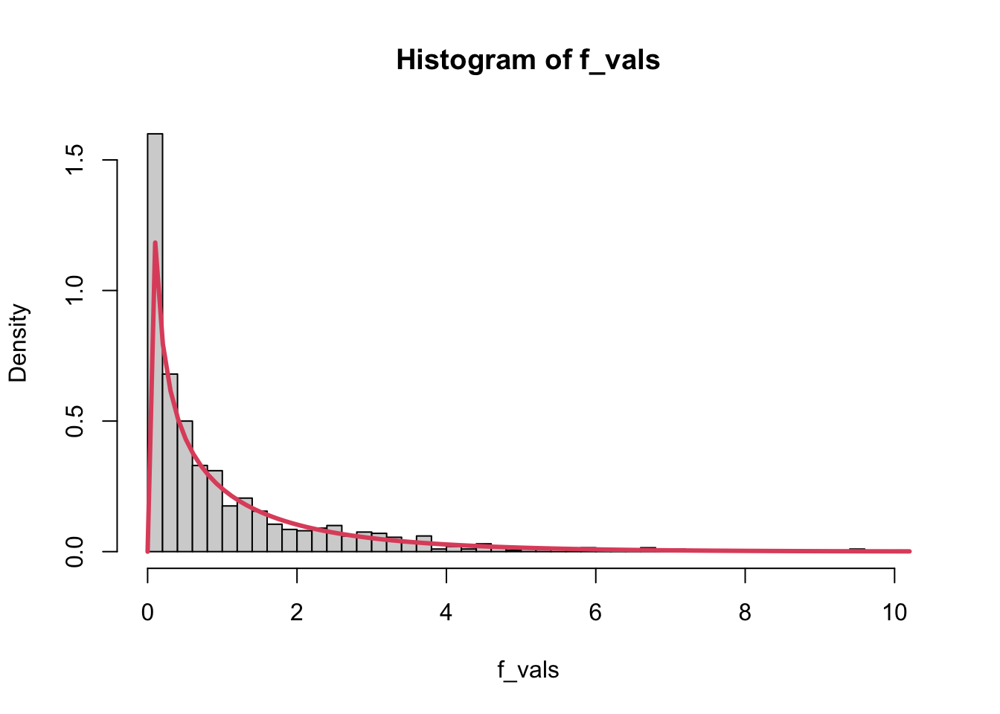
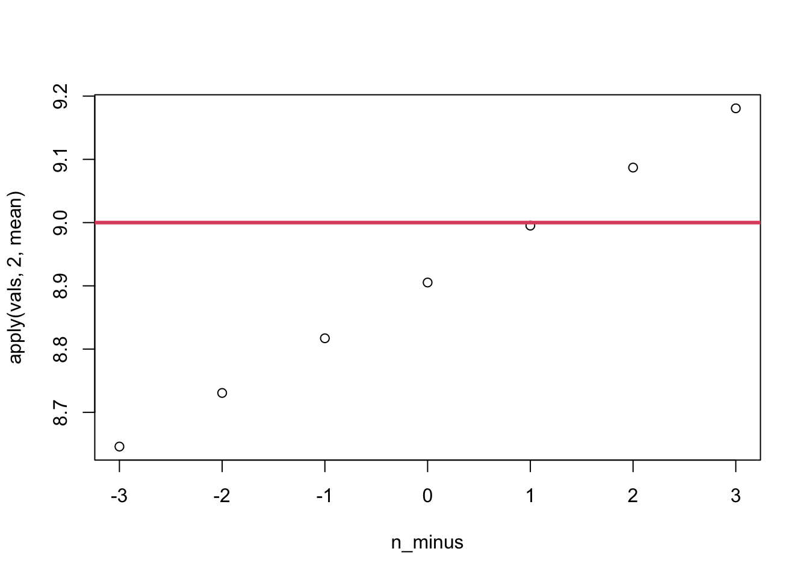
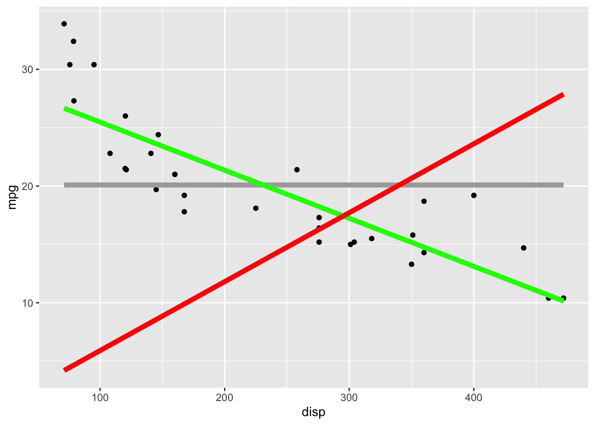

Given a data set with variable \(\underline y\), \(V(\underline y) = \sigma^2_y\).
This is just the variance of a single variable.
Once we’ve incorporated the linear relationship with \(\underline x\), \(V(\hat\beta \underline x + \underline\epsilon)=0+V(\underline\epsilon) = \sigma^2\)
Mathematically, \(\sigma^2 \le \sigma_y^2\).
Homework: when are they equal?
The variance in \(Y\) is explained by \(X\)!
This intuition is going to be very important: there’s variance in \(y\), but incorporating \(x\)explains some of that variability. Instead of variance around the mean of \(y\), we’re looking at the variance around the line.
Why is \(\sigma^2 < \sigma^2_y\)? Imagine a horizontal line at \(\bar y\) (also show that \(\hat\beta_0 = \bar y\) is the least squares estimator of the model \(y_i = \beta_0 + \epsilon\)). The variance above and below the line is simply the variance of \(y\), i.e.\(\sigma^2_y\). This is the absolute worst case scenario. If that line is moved to fit the data as well as possible, then the variance above and below the line will be smaller!
A Useful Identity, and its Interpretations
\[\begin{align*}
\hat\epsilon_i &= y_i - \hat y_i \\&= y_i - \bar y - (\hat y_i - \bar y)\\
\implies ... \implies \sum_{i=1}^n\hat\epsilon_i^2 &= \sum_{i=1}^n(y_i-\bar y)^2 - \sum_{i=1}^n(\hat y_i - \bar y)^2
\end{align*}\] where we’ve simply added and subtracted \(\bar y\). The final line skips a few steps (try them yourself, or see textbook page 28)!
Note that the “…” is actually fairly difficult to prove. You will need to plug in the least squares estimates \(\hat\beta_0\) and \(\hat\beta_1\) in order to get to the final answer.
The last line is often written as: \(SS_E = SS_T - SS_{Reg}\).
Sums of Squares
\[
SS_E = SS_T - SS_{Reg}
\]
\(SS_E\): Sum of Squared Errors
\(SS_T\): Sum of Squares Total (i.e., without considering \(\underline x\))
\(SS_{Reg}\): Sum of Squares due to the regression.
It’s the variance of the line (calculated at observed \(\underline x\) values) around the mean of \(\underline y\)???
This is incredibly useful, but weird.
I use \(SS_{Reg}\) instead of \(SS_R\)
Some textbooks use \(SS_R\) as SS Residuals (same as \(SS_E\)), which is confusing.
Aside: Degrees of Freedom
Def: The number of “pieces of information” from \(y_1, y_2, ..., y_n\) to construct a new number.
If I have \(x = (1,3,2,1,3,???)\) and I know that \(\bar x = 2\), I can recover the missing piece.
The mean “uses” (accounts for) one degree of freedom
If I have \(x = (1,2,3,1,???,???)\) and I know \(\bar x = 2\) and \(s_x^2=1\), I can recover the two missing pieces.
The variance accounts for two degrees of freedom.
One \(df\) is required to compute it.
Estimating one parameter takes away one degree of freedom for the rest!
Can find \(\bar x\) when \(x = (1)\), but can’t find \(s_x^2\) because there aren’t enough \(df\)!
Sums of Squares in an ANOVA Table
Source of Variation
Degress of Freedom \(df\)
Sum of Squares (\(SS\))
Mean Square (\(MS\))
Regression
1
\(\sum_{i=1}^n(\hat y_i - \bar y)^2\)
\(MS_{Reg}\)
Error
\(n-2\)
\(\sum_{i=1}^n(y_i - \hat y_i)^2\)
\(MS_E=s^2\)
Total (corrected)
\(n-1\)
\(\sum_{i=1}^n(y_i - \bar y)^2\)
\(s_y^2\)
Notice that \(SS_T = SS_{Reg} + SS_E\), which is also true for the \(df\) (but not \(MS\)).
Why is \(df_E = n-2\)? What two parameters have we estimated?
\(df_{Reg}\) is trickier to explain. It suffices to know that \(df_{Reg} = df_T-df_E\).
“Corrected”: We estimated the mean of \(\underline y\), rather than just \(\sum y_i^2\).
This used a degree of freedom!
Using Sums/Means of Squares
If \(\hat y_i = \bar y\) for all \(i\), then we have a horizontal line!
That is, there is no relationship between \(\underline x\) and \(\underline y\).
In this case, \(SS_{reg} = \sum_{i=1}^n(\hat y_i - \bar y)^2 = 0\).
Okay, so, just test for \(SS_{Reg} = 0\)?
But how??? We need some measure of how far from 0 is statistically significant!!!
Recall that \(SS_E = \sum_{i=1}^n(y_i - \hat y_i)^2\).
We can compare the variation around the line to the variation of the line.
This is \(MS_{Reg}/MS_E\), and it follows an \(F\) distribution!!
Statistics is the process of adding context to numbers. We expect a model in which there’s no relationship to have an \(SS_{Reg}\) of 0. Due to random sampling, we’re never actually going to get this.
Show the code
x <-runif(50, -5, 5)ssreg_vals <-double(1000)for (i in1:1000) {# There is no relationship here! y <-4+0*x +rnorm(50, 0, 3) mylm <-lm(y ~ x) yhat <-predict(mylm) ybar <-mean(y) ssreg_vals[i] <-sum((yhat - ybar)^2)}hist(ssreg_vals)

Show the code
sum(ssreg_vals ==0)
[1] 0
There’s no relationship, but none of the estimated values of \(SS_{Reg}\) are 0! Some of them were as high as 80, even though there’s truly no relationship!
So, what value of \(SS_{Reg}\) counts as “too large”? We actually don’t test this directly. Because of the way we chose to do statistics, it’s actually quite difficult to create a test at the boundary of possible values (in this case, testing if \(SS_{Reg} = 0\) when \(SS_{Reg}\) can only be greater than or equal to 0).
The F-test for Significance of Regression
The whole point of an ANOVA table is to get down to:
layout(mat =matrix(c(1,2,3), nrow =1), widths =c(0.5,1,1))set.seed(18)x <-runif(25, 0, 10)y <-rnorm(25, 2+5*x, 6)plot(rep(1, 25), y, xlab ="y", ylab ="y has variance", xaxt ="n")abline(h =mean(y))axis(2, mean(y), bquote(bar(y)), las =1)plot(x, y, ylab ="There's variance around the line")abline(lm(y~x))abline(h =mean(y))axis(2, mean(y), bquote(bar(y)), las =1)mids <-predict(lm(y~x))for(i inseq_along(mids)){lines(x =rep(x[i], 2), y =c(y[i], mids[i]), col =1)}mids <-predict(lm(y~x))plot(mids ~ x, type ="n", ylab ="The line varies around the mean of y!")for(i inseq_along(mids)){lines(x =rep(x[i], 2), y =c(mean(y), mids[i]))}axis(2, at =mean(y), labels =bquote(bar(y)), las =1)abline(h =mean(y))
Residual Assumptions
Residual: what’s left over
\(\hat\epsilon_i = y_i - \hat y_i\)
Assumptions:
\(E(\epsilon_i) = 0\)
\(V(\epsilon_i) = \sigma^2\)
\(\epsilon_i \sim N(0,\sigma^2)\)
We must check our assumptions!
There are statistical tests, but they’ll never tell you as much as a plot!
The statistical tests try to give a p-value for the hypothesis that the residuals are normal, but looking at the residual plot will always be superior!
Residuals versus fitted values: \(\hat{\underline\epsilon}\) versus \(\hat{\underline{y}}\)
Why \(\hat{\underline{y}}\) instead of \(\underline y\)?
See text. Try a regression of \(\hat{\underline\epsilon}\) versus \(\underline{y}\) yourself (mathematically and with code).
Why not \(\underline x\)?
For simple linear regression, \(\hat{\underline{y}}\) is like a unit change for \(\underline x\), so it doesn’t matter.
For multiple linear regression, it’s easier to have one variable for the \(x\) axis.
Show the code
library(ggplot2)theme_set(theme_bw())library(patchwork)library(broom)library(palmerpenguins)penguins <- penguins[complete.cases(penguins),]g1 <-ggplot(penguins) +aes(x = flipper_length_mm, y = body_mass_g) +geom_point() +geom_smooth(method ="lm", se =FALSE, formula = y~x) +labs(x ="Flipper Length (mm)",y ="Body Mass (g)",title ="y versus x")plm <-lm(body_mass_g ~ flipper_length_mm, data = penguins)p2 <-augment(plm)g2 <-ggplot(p2) +aes(x = .fitted, y = .resid) +geom_point() +geom_hline(yintercept =0, col ="grey") +labs(x ="Fitted", y ="Residuals", title ="Residuals versus Fitted")g1 / g2
I just want to add a little more context to the “unit change” idea. In a linear model, the estimated height of the line is \(\hat y_i = \hat\beta_0 + \hat\beta_1x_i\). To go from Celcius to Fahrenheit, we use the equation \(F_i = 32 + \frac{9}{5}C_i\), where \(C_i\) is the Celcius value that we have and \(F_i\) is the Fahrenheit value that we get. A line is literally a change of units!
Residual Plots and Assumption Checking
Mathematics is the process of making assumptions and seeing if we can break them.
\(E(\epsilon_i) = 0\) is a given since \(\sum_{i=1}^n\hat\epsilon_i=0\).
\(V(\epsilon_i) = \sigma^2\) (regardless of \(i\))
Check if the variance looks stable.
\(\epsilon_i \sim N(0,\sigma^2)\) is harder to see on a residuals versus fitted plot
Expect more points close to 0, fewer further away, no outliers
x <-runif(200, 0, 10)y0 <-2-3*xy <- y0 +rnorm(length(x), 0, 2* x)g1 <-ggplot() +aes(x = x, y = y) +geom_point() +geom_smooth(se =FALSE, method ="lm", formula = y~x) +labs(x =NULL, y =NULL, title ="y versus x")xydf <-augment(lm(y ~ x))g2 <-ggplot(xydf) +aes(x = .fitted, y = .resid) +geom_point() +geom_hline(yintercept =0, col ="grey") +labs(x ="Fitted", y ="Residuals", title ="Residuals versus Fitted")g1 + g2
The idea of heteroscedastic data is that \(V(\epsilon_i) = \sigma^2_i\), which depends on \(i\). The most obvious case is shown above, where the variance increases along the values of \(x\). This pattern is obviously present in the plot of \(y\) versus \(x\), but this can be very hard to see in higher dimensions!
Residual plots: non-linear trend?
Show the code
## fig-height: 4## fig-width: 8g1 <-ggplot(mtcars) +aes(x = disp, y = mpg) +geom_point() +geom_smooth(se =FALSE, method ="lm", formula = y~x) +labs(x ="Engine Displacement", y ="Miles per Gallon", title ="y versus x")mtdf <-augment(lm(mpg ~ disp, data = mtcars))g2 <-ggplot(mtdf) +aes(x = .fitted, y = .resid) +geom_point() +geom_smooth(se =FALSE) +geom_hline(yintercept =0, col ="grey") +labs(x ="Fitted", y ="Residuals", title ="Residuals versus Fitted - non-linear trend?")g1 + g2
The plots above show a (mild) violation of the assumption that \(y_i = \beta_0 + \beta_1x_i + \epsilon_i\), i.e., that the true trend is linear. This can be seen in the plot of \(y\) against \(x\), but it’s much more obvious in the residual plot!
Note that, in this course, the phrase “The Residual Plot” always refers to a plot of residuals against fitted. There are other residual plots, but the residual plot is resids versus fitted.
Testing Normality: Quantile-Quantile Plots
Consider the data (2,3,3,4,5,5,6).
50% of the data is below the median.
For a \(N(0,1)\) distribution, 50% of the data is below 0.
Put the median on the y axis, 0 on the x axis.
25% of the data is below Q1.
For a \(N(0,1)\) distribution, 25% is below qnorm(0.25) = -0.67
Put a point at x = -0.67, y = Q1.
75% of the data is below Q3.
For a \(N(0,1)\) distribution, 75% is below qnorm(0.75) = 0.67
The example link is a fun thing to play with! It’s written in Python, so don’t worry about the code. Change the sample sizes to get an idea of just how hard it is to definitively show that data are normal.
Other Residual Plots:
Scale-Location
Scale: Standardized residual
Location: Fitted value
More on standardized residuals in Ch08
Cook’s Distance
Basically, an outlier detection method.
More in Ch08
Leverage
More in Ch08
3.4 Maximum Likelihood
Main Idea
Find the values \(\hat\beta_0\), \(\hat\beta_1\), and \(\hat\sigma^2\) that maximize the likelihood of seeing our data.
Under the assumptions that \(X\) is fixed, \(Y = \beta_0 + \beta_1X + \epsilon_i\), and \(\epsilon_i\stackrel{iid}{\sim}N(0,\sigma^2)\), \[
Y \sim N(\beta_0 + \beta_1X, \sigma^2)
\]
The Likelihood
The probability of observering a data point is: \[
f_Y(y_i|x_i, \beta_0, \beta_1, \sigma^2) = \frac{1}{\sqrt{2\pi\sigma^2}}\exp\left(\frac{-1}{2\sigma^2}(y_i - \beta_0 - \beta_1x_i)^2\right)
\]
The likelihood of the parameters, given the data, is: \[
L(\beta_0, \beta_1, \sigma^2|x_i, y_i) = \prod_{i=1}^n\frac{1}{\sqrt{2\pi\sigma^2}}\exp\left(\frac{-1}{2\sigma^2}(y_i - \beta_0 - \beta_1x_i)^2\right)
\]
It’s just a shift in perspective!
Simple Coin Flip Example
Suppose we flipped 10 bottle caps and got 6 “crowns”. Assume the probability of “crown” (\(C\)) is unknown, labelled \(p\).
The probability of one cap flip is \(P(C|p) = p\).
The probability of this is \(P(C = 6|p) = p^6(1-p)^4\).
This is just \(P(\underline y|p) = \prod_{i=1}^nP(Y = y_i)\).
The likelihood is \(L(p|\underline y) = \prod_{i=1}^nP(Y = y_i)\).
Repeat for \(\frac{\partial L(\beta_0, \beta_, \sigma^2)}{\partial \beta_1} = 0\) and \(\frac{\partial L(\beta_0, \beta_, \sigma^2)}{\partial \sigma^2} = 0\)
HWK: Show that the estimates for \(\hat\beta_0\) and \(\hat\beta_1\) are the same as the OLS estimates. The estimate for \(\hat\sigma^2\) should come out to: \[
\hat\sigma^2 = \frac{1}{n}\sum_{i=1}^n\left(y_i - \hat\beta_0 - \hat\beta_1x_i\right)^2
\]
Interpreting the MSE
The basic question of statistics: “How big is this number?”
Compare to previous studies - is MSE larger than \(\sigma^2\)?
Implies that Bias\(^2\) and Fitted Model Variance are larger than expected.
F-test
Compare to “pure error” - direct estimate of \(\sigma^2\).
i.e. the variance in repeated trials on the same covariate values
Textbooks devotes a lot to this, but it’s often not plausible.
Won’t be on tests!
Compare to another model
We’ll focus on this (later)!
Compare to Previous Studies
Hypothesis test for \(\sigma^2 = \sigma_0^2\) versus \(\sigma^2 > \sigma_0^2\), where \(\sigma_0\) is the value from a previous study.
If significant, some of your error is coming from the study design!
Compare to other models
It can be shown that \(E(MS_{Reg}) = \sigma^2 + \beta_1S_{XX}\).
Consider the Null hypothesis \(\beta_1 =0\) (why is this a good null?).
Under this null, \(\frac{MS_{Reg}}{s^2}\sim F_{1, n-2}\).
Obvious CI from this.
This is exactly equivalent to the t-test for \(\beta_1\)! (See text.)
MSE of a Parameter: Bias of \(s^2\)
From a previous class, we know that \[
\frac{(n-2)s^2}{\sigma^2}\sim\chi^2_{n-2}
\]
From wikipedia, we know that the mean of a \(\chi^2_k\) distribution is \(k\). Therefore, \[
E\left(\frac{(n-2)s^2}{\sigma^2}\right) = n-2 \Leftrightarrow E(s^2) = \sigma^2
\] and thus \(s^2\) is unbiased.
This does not necessarily mean that \(s^2\) is the best estimator for \(\sigma^2\)!
MSE of a Parameter: Bias of \(s\)
Even though \(s^2\) is an unbiased estimator, \(s = \sqrt{s^2}\) is biased! Specifically, \(E(s) < \sigma\)
To see why, first note that \[
V(s) = E(s^2) - (E(s))^2 \Leftrightarrow E(s) = \sqrt{E(s^2) - V(s)}
\] since \(V(s) > 0\), \(E(s^2) - V(s) < E(s^2)\), and therefore \[
E(s) < \sqrt{E(s^2)} = \sqrt{\sigma^2} = \sigma
\]
Summary
Most of regression involves analysing the residuals.
Residuals are regression.
Residual plots will all be explained/explored thoroughly.
\(R^2 = \frac{SSReg}{SST}\) is the percent of variance explained.
This is a very important concept.
MLE usually involves writing out a product of normals
Take the ln(), then derivative, then set to 0 and solve.
The MSE is best interpreted relative to a hypothesis or other model.
The raw value is sometimes - but rarely - useful.
3.5 Exercises
Recommended textbook exercises: A, C, E, F, H, I, J, O, P, W
2.5 % 97.5 %
(Intercept) 8.225007 10.320447
x 1.105045 1.767682
Show that \(E(MS_{Reg}) = \sigma^2 + \beta_1^2\sum_{i=1}^n(x_i-\bar x)^2\). *Hint: \(V(y_i) = E(y_i^2) - E(y_i)^2\), and you’ll need to plug in the estimates for \(\hat\beta_0\) and \(\hat\beta_1\).
Use R to calculate the values in the ANOVA table, i.e. the “Sum of Squares” section, for a linear regression of waiting versus eruptions in the faithful data. Compare the the anova() output, shown below.
Analysis of Variance Table
Response: waiting
Df Sum Sq Mean Sq F value Pr(>F)
eruptions 1 40644 40644 1162.1 < 2.2e-16 ***
Residuals 270 9443 35
---
Signif. codes: 0 '***' 0.001 '**' 0.01 '*' 0.05 '.' 0.1 ' ' 1
Use a simulation to demonstrate that, assuming \(\beta_1 = 0\), \(MS_{Reg} / MS_E \sim F_{df_{Reg}, df_E}\).
Explain why this is only true when \(\beta_1 = 0\)?
Solution
n <-100x <-runif(n, 0, 10)f_vals <-c()msreg_vals <-c()for (i in1:1000) { e <-rnorm(n, 0, 1) y <--3+0.005*x + e mylm <-lm(y ~ x) y_hat <-predict(mylm) y_bar <-mean(y) ms_reg <-sum((y_hat - y_bar)^2) /1 msreg_vals[i] <- ms_reg ms_e <-sum((y - y_hat)^2) / (n -2) f_vals <-c(f_vals, ms_reg / ms_e)}hist(f_vals, freq =FALSE, breaks =40)curve(df(x, 1, n -2), col =2, lwd =3, add =TRUE)

Why is this only true when \(\beta_1=0\)? For intuition, this only should be true when the null is true: recall that p-values are always calculated assuming that the null is true, and the F-stat is no different.
Mathematically, this has to do with the fact that \(E(MS_{Reg}) = \sigma^2 + \beta_1S_{XX}\), not just \(\sigma^2\). Since this is not equal to \(\sigma^2\), this does not follow a Chi-Square distribution.
par(mfrow =c(1, 2))hist(msreg_vals, breaks =40, freq =FALSE)curve(dchisq(x, 1), add =TRUE, col =2, lwd =3)# qqplot, just to checkqqplot(x =qchisq(ppoints(length(msreg_vals)), 1), y = msreg_vals)abline(a =0, b =1)
… actually it kinda does follow a Chi-Square distribution. Not sure what to make of that.
Show that \(\frac{SSReg}{SST} = \frac{S_{XY}^2}{S_{XX}S_{YY}}\).
Explore why we use residuals versus fitted, rather than residuals versus observed.
Fit a regression, then plot \(\underline\epsilon\) versus \(\underline y\). What do you notice?
Find \(cor(\epsilon_i, y_i)\) mathematically. Compare this with what you see in the plot.
This is why we use residuals versus fitted, not residuals versus observed!
Show that the estimates for \(\hat\beta_0\) and \(\hat\beta_1\) are the same as the OLS estimates.
Find the MLE estimate for \(\sigma^2\).
Comment on the difference between this formula and the usual variance formula.
Comment on the variance formula from least squares
Solution
Derivation left as an exercise. Hint: You are allowed to take a derivative with respect to \(\sigma^2\), not just \(\sigma\).
MLE versus usual formula: We’re dividing by \(n\), not \(n - 1\) or even \(n - 2\)! The mle is actually biased. We’ll explore this in the next question.
There is no variance formula in least squares! MLE allows us to incorporate our assumption about the distribution of the residuals, giving us more to work with!
The MLE of \(\sigma^2\) divides by \(n\). Demonstrate via simulation that this is actually a biased estimate.
Solution
n <-100true_sigma <-3n_minus <-seq(-3, 3, 1)vals <-matrix(ncol =length(n_minus), nrow =10000)for (i in1:10000) { y <-rnorm(n, 0, true_sigma) vals[i, ] <-sum((y -mean(y))^2) / (n - n_minus)}apply(vals, 2, mean) |>plot(x = n_minus, y = _)abline(h = true_sigma^2, lwd =3, col =2)

From the plot, we get closest to the true value when we subtract 1 from \(n\). However, the MLE subtracts nothing from \(n\)! Why not? Let’s check the MSE.
The MSE is lowest when we divide by… \(n+1\)???? Yes, this is just how it is. See here for a bit more discussion on this issue. Basically, the estimator with \(n-1\) is unbiased, and \(n\) is lower variance without too much bias, while \(n+1\) is much more bias than we’re comfortable with.
Prove that \(\sum_i=1^n\hat\epsilon_i = 0\). Really try it yourself, then check the hint below only if your’re struggling.
Hint\(\hat\epsilon_i = y_i - \hat\beta_0 - \hat\beta_1x_i\), \(\sum_{i=1}^ny_i = n\bar y\), and \(\beta_0 = \bar y - \hat\beta_1x_i\). *****
Consider the following plot, where the grey line is the mean model (where \(\beta_1 = 0\)), the green line represents the simple linear regression of mpg versus displacement, and the red line represents a model where the intercept is forced to be 0 (I use this a lot because it’s easy to conceptualize and the math is easy, not because it’s usually relevant to applications). Using R, calculate the anova table for both models and interpret the results.
ggplot(mtcars) +aes(x = disp, y = mpg) +geom_point() +geom_smooth(method ="lm", se =FALSE, formula = y ~1, colour ="darkgrey", linewidth =2) +geom_smooth(method ="lm", se =FALSE, formula = y ~ x, colour ="green", linewidth =2) +geom_smooth(method ="lm", se =FALSE, formula = y ~0+ x, colour ="red", linewidth =2)

# Model with an intercept (the usual model)lm_with <-lm(mpg ~ disp, data = mtcars)# Using "0 +" forces the intercept to be 0lm_without <-lm(mpg ~0+ disp, data = mtcars)
Solution
anova(lm_with)
Analysis of Variance Table
Response: mpg
Df Sum Sq Mean Sq F value Pr(>F)
disp 1 808.89 808.89 76.513 9.38e-10 ***
Residuals 30 317.16 10.57
---
Signif. codes: 0 '***' 0.001 '**' 0.01 '*' 0.05 '.' 0.1 ' ' 1
anova(lm_without)
Analysis of Variance Table
Response: mpg
Df Sum Sq Mean Sq F value Pr(>F)
disp 1 7599.9 7599.9 36.57 1.073e-06 ***
Residuals 31 6442.4 207.8
---
Signif. codes: 0 '***' 0.001 '**' 0.01 '*' 0.05 '.' 0.1 ' ' 1
Some interpretations:
For lm_with:
\(MS_{Reg} = 808.89\) and \(MS_E = 10.57\), which are clearly different numbers (even with a sample size of 32, which you can see from \(df_E = 30 = n - 2\)).
The model is clearly different from just using the mean!
The p-value confirms this.
For lm_without:
Again, the model is clearly “different” from just using the mean, but it’s not necessarily better than using it. The graph shows that this model fits very poorly, the variance is just significantly different!
Note that the degrees of freedom is \(n - 1\), since we’re only estimating one parameter (the slope).
Comparison:
\(MS_{E}^{(with)} = 10.57\) and \(MS_E^{(without)} = 207.8\). Clearly the model with an intercept is fitting much much better!
Notice: we did not look at \(MS_{E}^{(with)} = 10.57\) and conclude that it was clearly a small value. The MSE is really hard to interpret on it’s own, but it’s quite useful for comparisons!